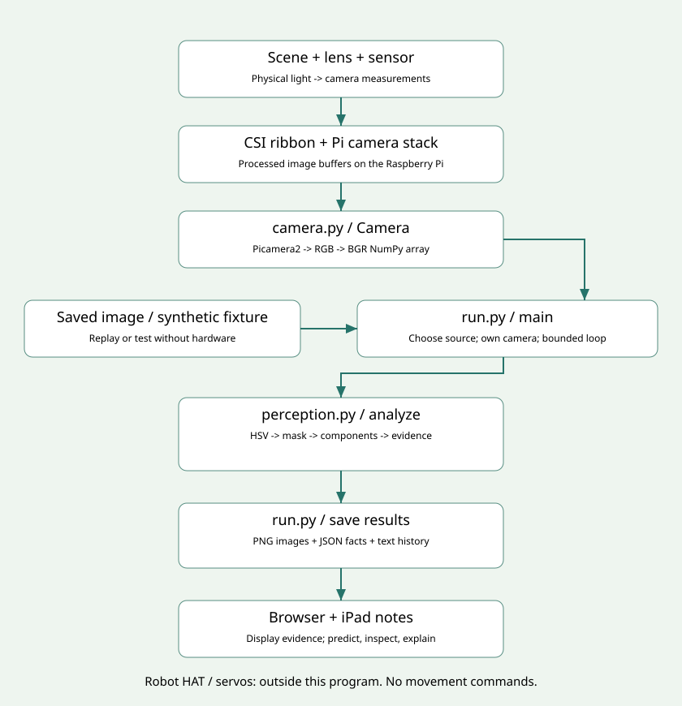

Your 90-minute mission: make pixels useful with Python
Finish line: demonstrate a working camera-to-report pipeline; explain a function, a class, a dictionary, an array, and a cleanup path; make two intentional changes; show one failure case. Read code together rather than copying it line by line.
0–10 minutes | Run first, then ask how
Run python3 -m vision.play, then the one-frame camera command in Start Here. Open the original, mask, and annotated images side by side. Put a blue marker near the center, then remove it and make a second run. Predict what “found” should mean before looking at the output.
A pixel stores measurements at one image location. An array organizes those values so a program can process many pixels together. A mask is an image that records which pixels passed a rule. A detection in this lab means that one connected region passed our color and area rules. It does not mean the system knows what the object is.
Read the first print in play.py. The scene is synthetic, so it tests software rather than the physical camera. Find the dictionary key image_region. Explain why observation["image_region"] is different from frame[100, 25]: one retrieves a named fact, the other indexes an image location.
Discuss: If a blue chair and a blue card both pass, is the program broken, or is our definition too broad? Record the rule you believe the program implements.

10–22 minutes | Trace the complete system
Open system-diagram.svg. Follow the hardware boundary: light reaches the lens and image sensor; camera data travels through the ribbon/CSI connection to the Raspberry Pi camera stack; Picamera2 exposes processed images to Python. The Robot HAT and servos are other parts of PiDog, but our program does not send commands to them.
Now follow the software boundary: run.py owns the sequence; Camera manages the device; perception.analyze turns an image into evidence; run.py saves files; the browser displays those files. OpenCV is a library, not the camera hardware. Your camera class is a wrapper around Picamera2, not a new camera driver.
Read camera.py in full. A class defines behavior and state. An object/instance is one concrete use of the class. self.device stores the camera library object for that instance. A method is a function belonging to a class. camera.read() calls a method; analyze(frame, settings) calls a module-level function.
with Camera() as camera: establishes ownership. __enter__ starts the device; __exit__ closes it when the block ends, even on an error. Startup has its own exception cleanup because an unsuccessful __enter__ does not trigger __exit__. Do not memorize the special names yet: explain the responsibility.
Mini experiment: stop a repeated camera run with Ctrl+C, choose a new output folder, then immediately start another. Verify capture starts again. If it does not, record the exact error instead of opening more camera programs.
22–37 minutes | Understand the function that sees color
Read analyze() in perception.py in four chunks: input checks; color mask; connected components; evidence and drawing.
The input contract is a nonempty NumPy array with shape (height, width, 3), unsigned 8-bit values, and BGR channel order. Height is rows; width is columns. OpenCV commonly uses BGR, so blue is (255, 0, 0). Pillow's RGB image is explicitly converted at the camera boundary. Mixing these conventions can turn an intended blue rule into a red-looking experiment.
HSV describes hue, saturation, and value. For OpenCV's 8-bit representation, hue runs from 0 to 179 and the other channels run from 0 to 255. cv2.cvtColor changes the representation. cv2.inRange asks whether all three channel values are inside their inclusive bounds. White mask pixels are matches, not high-confidence predictions.
Connected components group touching matched pixels. With 8-connectivity, diagonal neighbors also touch. Label 0 is background. range(1, count) leaves background out. max(..., key=lambda ...) chooses the region with the most pixels, not the nearest region. If two have equal area, the first encountered candidate wins; that is not a meaningful preference.
Run and change: in play.py change min_pixels=300 to min_pixels=2000. Predict which outputs change, run, explain, then restore 300. Next change color="blue" to color="green", predict and run again. Restore blue. The code is already complete; these are experiments, not missing answers.
Discuss: What is a parameter? What is an argument? Where is the return statement? Why does analyze return three things instead of writing the files itself?
37–52 minutes | Design a fair experiment
Use ONE saved original image so changes in lighting and pose do not hide the effect of a parameter:
python3 -m vision.run --image runs/blue01/original.png --min-pixels 100 --out runs/area100
python3 -m vision.run --image runs/blue01/original.png --min-pixels 2000 --out runs/area2000
If both agree, inspect area_pixels and choose thresholds just below and just above that observed value. Changing a parameter does not guarantee a visible change for every input. The area threshold applies to the largest connected component, not the sum of all blue pixels. Area is not a probability and does not have units of centimeters.
Now place two blue objects in the view, one larger in the image. Make a new one-frame capture. Which is selected? Next place a large blue background behind a small marker. This is a counterexample to “the code always finds my marker.” Describe the actual implemented rule.
Try --clean on a saved image with small blue speckles. Compare the mask before and after. A 3-by-3 morphological opening can remove small regions; it can also remove narrow parts of the desired target. Explain why a filter can help one scene and harm another.
Notes: record input filename, one changed setting, prediction, observed area and region, and the explanation. Keep the original evidence, not only the attractive annotated picture.
52–57 minutes | Break and reset
Stop the repeated capture if it is still running. Leave the robot in place. Pick one real failure to explain after the break. The web server can remain running for the next activity.
57–72 minutes | Trace a loop and add one useful observation
Read main() in run.py. argparse translates command-line text into values. range(args.frames) gives a finite sequence. Each iteration captures or loads, analyzes, saves, prints, and optionally waits. A local variable such as frame can refer to a new array on the next iteration. Dictionary keys give the output a stable structure even when no region is found.
Run the 30-frame command. Move the marker left, center, and right, then hide it. Watch both the terminal and browser. The browser can skip intermediate observations because it refreshes less often; history.jsonl contains every completed record. Processing_ms measures analyze only, not capture, file writing, or browser refresh.
Make this complete addition to perception.py immediately before return annotated, mask, evidence:
# Largest matched region as a fraction of the whole image; still not confidence.
evidence["area_fraction"] = evidence["area_pixels"] / (width * height)
Run on the same saved image in a new output folder and inspect latest.json. This is a meaningful dictionary extension. Explain the numerator, denominator, units, and why it can be nonzero even when found is false. Do not add a motor command based on this fraction: image size alone does not establish range or a clear path.
Optional second addition, if time: use the full closest-to-center function in EXTENSIONS.md to change the selection rule. Predict a scene in which the two selection rules disagree. Keep the original working file so you can compare.
72–83 minutes | Debug with evidence and use AI carefully
Read the validation checks at the start of analyze and Settings. An exception communicates a failed requirement. It is different from a valid observation with found=False. Try an invalid color using --color purple; argparse should reject it before camera capture. Try an already-used output folder; the program should refuse to overwrite evidence.
Trace one observation from an array to a dictionary to JSON. Python None becomes JSON null, and Python False becomes JSON false. The mask and drawing stay in image files because arrays of pixels are a different kind of artifact.
Use AI for one small task: “Explain this function's inputs, output, and side effects. Ask me to predict one case before revealing the answer.” Or: “Suggest three tests for this exact selection rule. Do not change the camera API or add motors.” You should own the rule and the prediction; AI can help format comments, explain an error, or suggest a test. Review every suggested library call against the supplied code and official documentation.
Debug order: reproduce once; read the exact error; identify capture, processing, or display; change one thing; rerun the same input. A missing browser picture is not automatically a failed detector.
83–90 minutes | Demonstrate and teach back
Show one real-camera success, one controlled parameter comparison, and one failure. Explain a function call, a class instance, a dictionary lookup, an array slice, a loop, and camera cleanup using lines from the code. Draw the system boundaries on the iPad notes page.
Finish with one precise claim: “On this input and these settings, the program found the largest connected region matching this color range.” Explain why it does not yet establish an object category, a distance, or a navigation command.
Save notes and your changed code. Record one next project from EXTENSIONS.md and the evidence it would need. Stop capture and the web server with Ctrl+C.